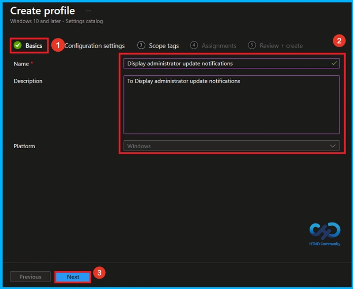
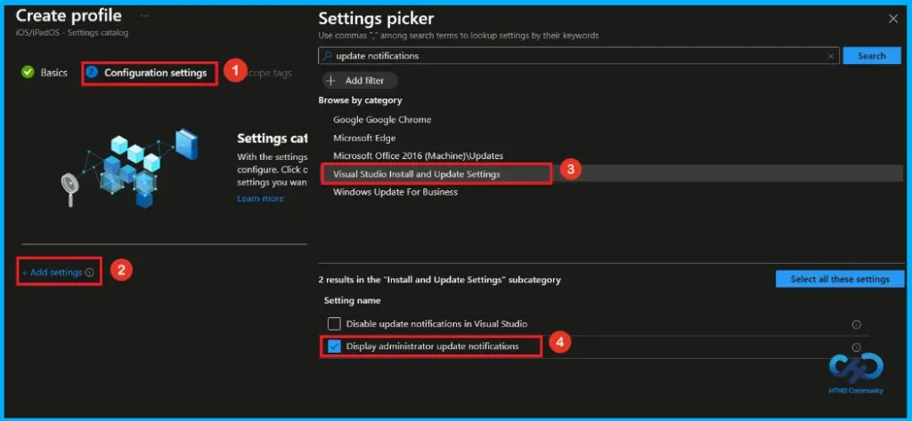
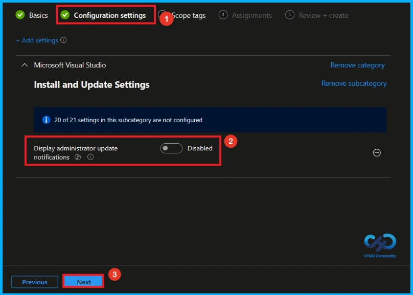
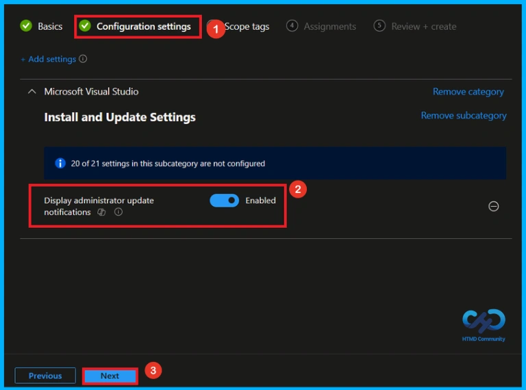
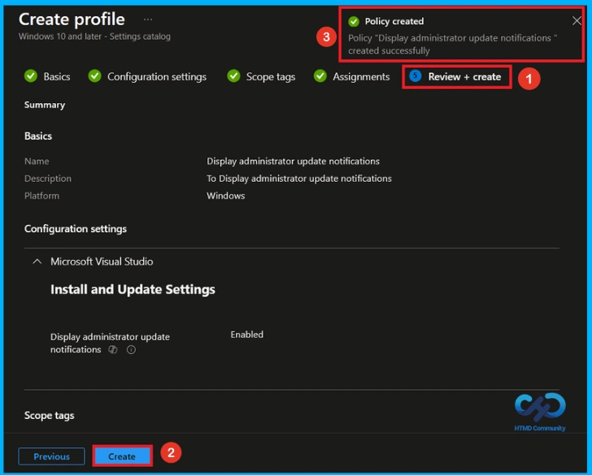
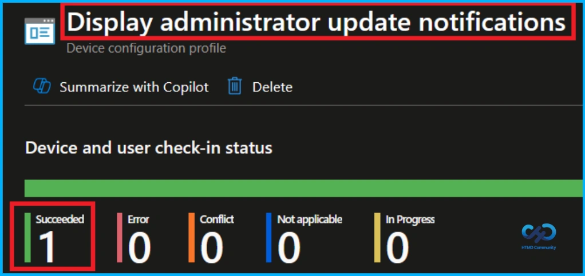
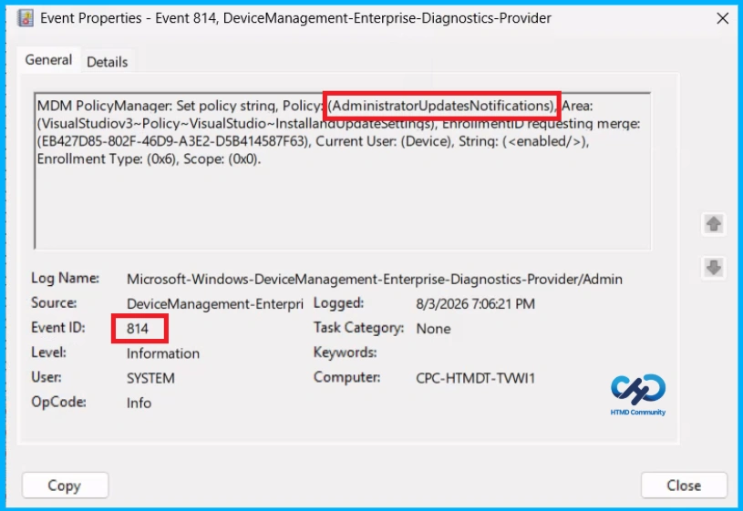
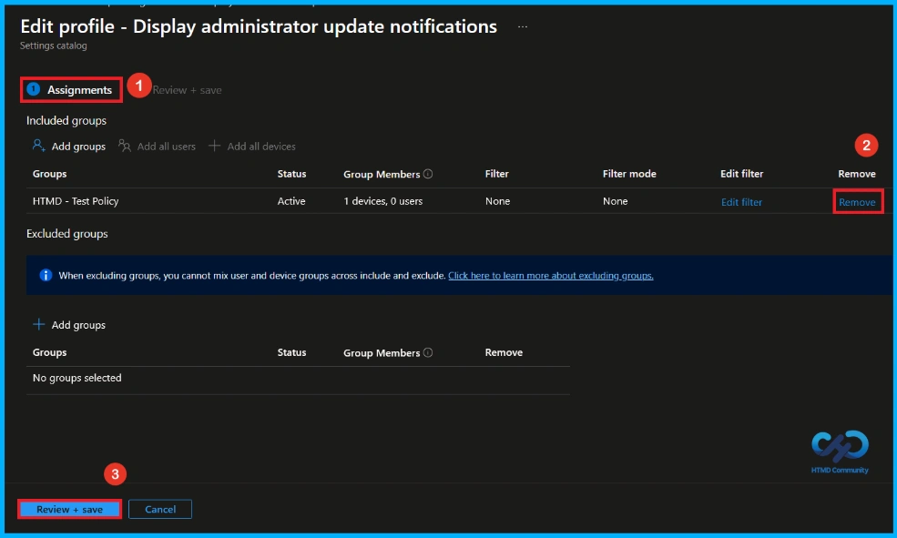
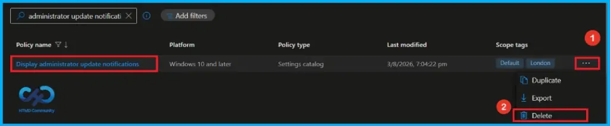

key Takeaways
- Shows Visual Studio update notifications to users.
- Displays update success or failure status.
- Helps users understand and fix update problems.
- May ask users to close Visual Studio for updates.
Hey, let’s discuss about how to configure Windows Toast Notifications for Visual Studio Administrator updates using Intune. This setting allows Visual Studio to show administrator update notifications through Windows toast notifications. When enabled, users will receive updates about whether the administrator update was successful or failed.
Configure Windows Toast Notifications for Visual Studio Administrator Updates using Intune
If an update fails, the notification will provide details about the issue and help users fix it. A common reason for failure is that Visual Studio is still open, so the notification may ask users to close Visual Studio before applying the update. These notifications follow the Windows toast notification settings on the computer.
How to Create a Policy in Intune
To create a new policy, first sign in to the Microsoft Intune Admin Center. Then, click Devices from the left menu and select Configuration. After that, click Create and choose New Policy to start creating a new policy.

Create a Profile
The next step is to create the policy by configuring a new profile. During the profile creation process, select Windows 10 and later as the Platform and Settings catalog as the Profile type. After selecting these options, click Create to continue with the policy creation process.

Basic Tab of Display Administrator Update Notifications Policy
Enter the Name of the policy (Display Administrator Update Notifications) and add a brief Description, such as To Display Administrator Update Notifications. The description is optional and can be used to describe the purpose of the policy. Click Next to continue.

Configure Display Administrator Update Notifications Policy
On the configuration setting, Click the + Add settings button shown in blue. After clicking it, the settings picker will open. Here, search update notifications on the search bar and select visual studio install and update settings as category. Then, select the policy Display Administrator Update Notifications.

Disable Display Administrator Update Notifications Policy
After you select Display Administrator Update Notifications Policy and close the Settings picker, it appears on the Configuration page. The Display Administrator Update Notifications setting is Disable by default. If you want to keep it disabled, click Next.

Enable Display Administrator Update Notifications Policy
To enable the Display Administrator Update Notifications policy, turn on the toggle switch to activate the setting in the Configuration settings page. When the setting is enabled, the toggle button changes to blue. Click Next to continue.

What is Scope Tag
Scope tag is mainly used for organizing policies and managing access, but it is not mandatory to configure. If no scope tags are needed, simply click Next to continue with the policy creation process. Here, i selected Landon as a scope tag.

Assignment Tab for Assign Group
In the Assignments tab, specify the target users or devices for the policy. Click Add Group under Include Groups, select the required group (HTMD – Test Policy) from the list, and then click Next to move to the next step.

Final Step of Display Administrator Update Notifications Policy
In this section, you can review all the information entered in the previous steps, including the basic details, configuration settings, and assignments. After verifying the details, click Create to complete the process. A notification will appear confirming that the Display Administrator Update Notifications policy was created successfully.

Device and User Check-in Status
To check whether the policy is successfully applied, sign in to the Microsoft Intune admin center and go to Devices > Configuration profiles. Select the Display Administrator Update Notifications policy from the list. This opens the policy overview page, where you can see a quick summary of its deployment status.

Client Side Verification
To confirm if a policy has been applied, use the Event Viewer on the client device. Go to Applications and Services Logs > Microsoft > Windows > Device Management > Enterprise Diagnostic Provider > Admin. Use the Filter Current Log option and search for Intune event 814.
MDM PolicyManager: Set policy strinq, Policy: (AdministratorUpdatesNotifications),Area:
(VisualStudiov3~Policy~VisualStudio~Installandupdatesettinqs), EnrolimentD requesting merge:
(EB427D85-802F-46D9-A3E2-D5B414587F63), Current User: (Device), String: (),
Enrollment Type: (0x6), Scope: (0x0).

How to Remove Assigned Group from Display Administrator Update Notifications Policy
If you want to stop the policy from applying to certain users or devices, you can remove the assigned groups. Go to Devices > Configuration profiles, select the Display Administrator Update Notifications policy, and open Assignments. Select the group to remove and delete it from the assignment list.
For detailed information, you can refer to our previous post – Learn How to Delete or Remove App Assignment from Intune using by Step-by-Step Guide.

How to Delete Display Administrator Update Notifications Policy from Intune
If the policy is no longer required, you can delete it completely from Intune. Navigate to Devices > Configuration profiles, select the Display Administrator Update Notifications policy, and click Delete. Deleting the policy permanently removes it from Intune.
For detailed information, you can refer to our previous post – How to Delete Allow Clipboard History Policy in Intune Step by Step Guide.

Need Further Assistance or Have Technical Questions?
Join the LinkedIn Page and Telegram group to get the latest step-by-step guides and news updates. Join our Meetup Page to participate in User group meetings. Also, join the WhatsApp Community and the Whatsapp channel to get the latest news on Microsoft Technologies. We are there on Reddit as well.
Author
Anoop C Nair has been Microsoft MVP from 2015 onwards for 10 consecutive years! He is a Workplace Solution Architect with more than 22+ years of experience in Workplace technologies. He is also a Blogger, Speaker, and Local User Group Community leader. His primary focus is on Device Management technologies like SCCM and Intune. He writes about technologies like Intune, SCCM, Windows, Cloud PC, Windows, Entra, Microsoft Security, Career, etc